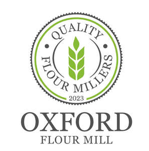

Trade Mark Journal No.2025/028 11 July 2025
UK00004227447 1 July 2025 (1,3,5,7,8,11,16,17,21,25,28,29,30,31,35,37,39,40,42,43)

- Class 1
- Zircon flour; Flour improvers; Tapioca flour for industrial purposes; Oilseed flour for industrial use; Potato flour for industrial purposes; Enzyme preparations for use in the flour milling industry; Flour for industrial purposes; Rice bran [fertilizer]; Wood flour for use as a filler in the manufacture of plastics; Enzymes for use in the bakery industry; Chemical substances for use as food ingredients; Esters of polyols for use as ingredients in foodstuffs; Synthetic fragrance ingredients; Chemicals for use as ingredients in the course of manufacture; Collagen based ingredients for cosmetic preparations; Collagen used as a raw ingredient in the manufacture of cosmetics; Active chemical ingredients; Chemical preservatives for use in bread making; Chemical seasonings [for food manufacture]; Emulsifiers for food preparations; Emulsifiers for use in the manufacture of food; Emulsifiers for use in the manufacture of foods; Food preservatives; Preservatives for food [chemical]; Lecithin for industrial use in the manufacture of food products; Antioxidants for use in the manufacture of food products; Preservatives for foodstuffs; Chemical and organic compositions for use in the manufacture of food and beverages.
- Class 3
- Perfumeries.
- Class 5
- Lacteal flour for babies; Flour for pharmaceutical purposes; Bread products for diabetics.
- Class 7
- Power-operated flour mills; Flour mill machines; Bread slicers [machines]; Grain mills [machines]; Rolling mills; Ball mills; Cylinders for mills; Pepper mills other than hand-operated; Pepper mills, other than hand-operated; Centrifugal mills; Rolling mills [for metalworking]; Rolling mills for metalworking; Mills [machines]; Electric salt mills; Straw mills [machines]; Liners for hammer mills; Regrinding mills [machines] for producing plastic pellets; Rolling mill cylinders; Grinding mills [for chemical processing]; Grinding mills for chemical processing; Electric pepper mills; Rolls for rolling mills; Mills and crushing machines; Paper mill machines; Cake-fodder crushing machines [feed mills]; Tubing mills [for metalworking]; Tubing mills for metalworking; End mills; Rolling mill rolls; Coffee mills [other than hand operated]; Textile milling machines; Husking machines (Corn and grain -); Corn and grain husking machines; Grain husking machines; Milling cutters for milling machines; Mills for household purposes, other than hand-operated; Rice grain sorting machines; Thread mills [power tools]; Portable saw mills; Milling grinding motors.
- Class 8
- Bread slicers [hand-operated].
- Class 11
- Overlying bed ovens for bakeries; Commercial ovens for baking food; Bread baking machines; Baking ovens; Pizza ovens; Bread makers; Industrial ovens and furnaces (not for food or beverages).
- Class 16
- Printed recipes sold as a component of food packaging.
- Class 17
- Asbestos mill boards.
- Class 21
- Flour sifters; Pastry cutters; Pastry molds; Pastry boards; Salt mills; Hand-operated salt mills; Pepper mills; Hand-operated pepper mills; Pepper mills, hand-operated; Hand-operated spice mills; Pepper mills [hand-operated]; Salt and pepper mills; Salt mills [hand operated]; Coffee mills (Hand operated -); Mills for domestic purposes, hand-operated; Mills for household purposes, hand-operated; Baking dishes.
- Class 25
- Vests for use in barber shops and salons.
- Class 28
- Play shops.
- Class 29
- Rice bran oil [for food]; Rice bran oil for food; Almond butter; Rice milk; Powdered soya milk; Coconut milk powder; Nut-based food bars; Fruit-based fillings for cakes and pies; Dairy desserts; Jellies for food, other than confectionery; Edible oils for use in cooking foodstuffs; Desserts made from milk products; Cream [dairy products]; Cream, being dairy products; Desserts of yogurt; Edible oils for glazing foodstuffs.
- Class 30
- Flour; Dough flour; Wheat flour; Flour of rice; Rice flour; Buckwheat flour; Tapioca flour; Flour of oats; Almond flour; Flour of millet; Rye flour; Flour of barley; Chickpea flour; Wheat starch flour; Wheaten flour; Flour for baking; Corn flour; Flour of corn; Cereal flour; Soya flour; Maize flour; Potato flour; Rice starch flour; Cake flour; Vegetable flour; Flour confectionery; Flour for doughnuts; Lentil flour; Truffle flour; Bean flour; Wheat flour [for food]; Edible flour; Flour for food; Buckwheat flour [for food]; Buckwheat flour for food; Corn starch flour; Pizza flour; Flour mixes; Glutinous rice flour; Tapioca flour for food; Tapioca flour [for food]; Toasted grain flour; Coixseed flour; Rice flour porridge; Flour mixtures for use in baking; Barley flour [for food]; Barley flour for food; Potato flour confectionery; Soya flour for food; Chinese batter flour; Corn flour [for food]; Potato flour for food; Potato flour [for food]; Oilseed flour for food; Mixed flour for food; Flour ready for baking; Pulse flour for food; Flour for making dumplings of glutinous rice; Non-medicated flour confectionery; Adlay flour for food; Flour concentrate for food; Flour preparations for food; Non-medicated flour confections; Dried sugared cakes of rice flour (rakugan); Flour based chips; Cornflour; Mung bean flour; Cornmeal; Semolina; Fava bean flour; Cornflour bun bread (almojábana); Non-medicated flour confectionery coated with chocolate; Wholemeal rice; Non-medicated flour confectionery containing chocolate; Deproteinised flour for use in the production of beer; Nut flours; Snack food products made from rice flour; Non-medicated flour confectionery coated with imitation chocolate; Flour based savory snacks; Non-medicated flour confectionery containing imitation chocolate; Snack foods prepared from potato flour; Prepared savory foodstuffs made from potato flour; Snack food products made from maize flour; Wholemeal bread; Snack food products made from soya flour; Flour-based gnocchi; Wholemeal bread mixes; Snack food products made from rusk flour; Snack food products made from potato flour; Couscous [semolina]; Bread doughs; Semolina pudding; Powdered starch syrup [for food]; Wholemeal pasta; Injeolmi [glutinous rice cakes coated with powdered beans]; Pastry dough; Snack food products made from cereal flour; Uncooked dried pieces of wheat gluten; Dried wheat gluten; Flour-based dumplings; Powdered sugar; Seitan [dried wheat gluten]; Malted bread mix; Dough for cakes; Corn bread mix; Dried pieces of wheat gluten (fu, uncooked); Wholemeal noodles; Dough; Rice biscuits; Glutinous pounded rice cake coated with bean powder (injeolmi); Buckwheat pasta; Wheat (Flakes of -); Yeast powder; Cake dough; Processed semolina; Rye bread; Sugar almonds; Rice crusts; Rice tapioca; Malted wheat; Rolled oats and wheat; Malt bread; Granulated sugar; Bread crumbs; Bakery goods; Gluten-free bakery products; Chocolate fillings for bakery products; Pastries; Viennese pastries; Macaroons [pastry]; Mixes for making bakery products; Confectionery bars; Breads; Chocolate pastries; Pastries, cakes, tarts and biscuits (cookies); Almond pastries; Danish pastries; Chocolate for confectionery and bread; Flavorings for cakes; Fondants [confectionery]; Custard-based fillings for cakes and pies; Vegan cakes; Cakes; Pastry; Preparations for making bakery products; Ice-cream cakes; Savory pastries; Chocolate-based fillings for cakes and pies; Cake doughs; Croissants; Prepared desserts [pastries]; Baguettes; Cake bars; Pâté [pastries]; Brioches; Pastries with fruit; Fruit pastries; Chocolate cakes; Malt cakes; Frozen pastries; Cheesecakes; Gluten-free bread; Custards [baked desserts]; Flavourings for cakes; Hushpuppies [breads]; Chocolate confections; Chocolate-based ready-to-eat food bars; Bread biscuits; Sopapillas [fried pastries]; Dairy confectionery; Truffles [confectionery]; Ready-to-bake dough products; Taiyaki (Japanese fish-shaped cakes with various fillings); Confectionery chips for baking; Bagels; Almond confectionery; Fruit breads; Confectionery; Frozen dairy confections; Chocolate decorations for cakes; Mixtures for making pastries; Viennoiserie; Pastry mixes; Prepared desserts [confectionery]; Chocolate confectionery products; Confectionery chocolate products; Chocolate confectionary; Pre-baked bread; Bread buns; Bread and buns; Cream cakes; Sweets (Non-medicated -) in the nature of chocolate eclairs; Eclairs; Fruit cakes; Barm cakes; Doughnuts; Pastries containing creams; Fruit filled pastry products; Chocolate desserts; Candy decorations for cakes; Millet cakes; Pastry cases; Danish bread rolls; Muesli desserts; Dragees [non-medicated confectionery]; Cupcakes; Macarons; Danish bread; Pastries containing creams and fruit; Chocolate confectionery; Cocoa-based ingredients for confectionery products; Corn, milled; Yeast for use as an ingredient in foods; Freeze-dried dishes with main ingredient being pasta; Freeze-dried dishes with the main ingredient being pasta; Biscuits containing chocolate flavoured ingredients; Lyophilized dishes with main ingredient being pasta; Lyophilized dishes with the main ingredient being pasta; Lyophilised dishes with main ingredient being pasta; Lyophilised dishes with the main ingredient being pasta; Freeze-dried dishes with main ingredient being rice; Freeze-dried dishes with the main ingredient being rice; Pizza spices; Baking spices; Lyophilized dishes with main ingredient being rice; Lyophilized dishes with the main ingredient being rice; Flavourings for snack foods [other than essential oils]; Flavourings of almond, other than essential oils, for food or beverages; Gluten additives for culinary purposes; Extracts of coffee for use as flavours in foodstuffs; Flavourings of lemons, other than essential oils, for food or beverages; Lyophilised dishes with main ingredient being rice; Lyophilised dishes with the main ingredient being rice; Thickeners for cooking foodstuffs; Flavourings of almond for food or beverages; Flavourings of lemons for food or beverages; Yeast extracts for food; Snack food products made from cereals; Snack food products consisting of cereal products; Organic thickening agents for cooking foodstuffs; Food flavourings; Snack food products made from rice; Food seasonings; Extracts of cocoa for use as flavours in foodstuffs; Pre-mixes ready for baking; Foodstuffs made of sugar for sweetening desserts; Foodstuffs made from dough; Flavourings for foods; Chemical seasonings [cooking]; Gluten-free pizza; Pizza dough mix; Snack food products made from cereal starch; Vanilla flavourings for food or beverages; Chocolate food beverages not being dairy-based or vegetable based; Culinary herbs; Frozen pastry; Gluten prepared as foodstuff; Wheat-based snack foods; Frozen yogurt confections; Starch products for food; Ready-made baking mixtures; Aromatic preparations for pastries; Foodstuffs made of a sweetener for sweetening desserts.
- Class 31
- Wheat bran; Wheat; Fresh culinary herbs; Culinary herbs (Fresh -).
- Class 35
- Wholesale services in relation to cocoa; Retail services in relation to bakery products; Retail services relating to bakery products; Wholesale services in relation to hand-operated tools for construction.
- Class 37
- Building of shops; Cleaning of shops; Building of fair stalls and shops.
- Class 39
- Delivery of food by restaurants.
- Class 40
- Flour milling; Milling (Flour -); Milling of flour; Mill working.
- Class 42
- Design of shops; Design of restaurants.
- Class 43
- Delicatessens [restaurants]; Restaurants; Eateries; Coffee shops; Cafés; Restaurants (Self-service -); Self-service restaurants; Providing food and drink in doughnut shops; Serving food and drink in doughnut shops; Tourist restaurants; Catering in fast-food cafeterias; Carry-out restaurants; Providing food and drink in restaurants and bars; Providing reviews of restaurants and bars; Serving food and drink in restaurants and bars; Fast food restaurants; Grill restaurants.
Oxford Flour Mill LTD